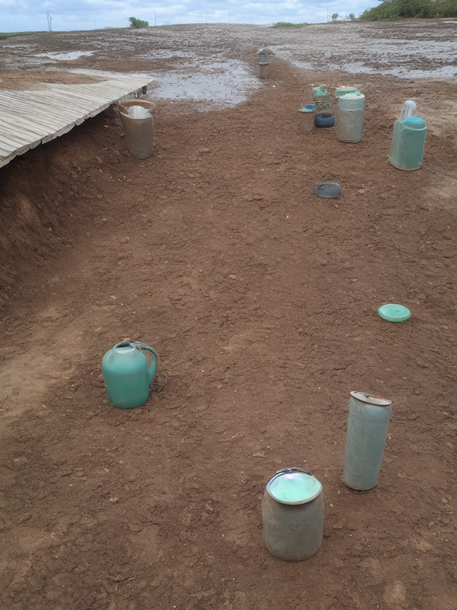

g4g_20240109T184800Z_mogadishu-wadajir_health_risk_medium_03
health_risk
medium
approved
approved
Wadajir, Mogadishu, Banaadir
Unsafe access conditions near water source.
node scripts/update-demo-image-quality.mjs --id g4g_20240109T184800Z_mogadishu-wadajir_health_risk_medium_03 --status approved
node scripts/update-demo-image-quality.mjs --id g4g_20240109T184800Z_mogadishu-wadajir_health_risk_medium_03 --status rejected